← 返回阅读库 · 原论文目录
论文讲解阅读文档 · 机器人学 · v119
Stabilizing transformers for reinforcement learning[1910.06764]
视频时长 00:13:57；讲解文字 6,804 字符；提取讲解画面 24 张。按视频原顺序阅读，每段文字保留时间戳。
文字来自整段视频的自动语音转写，按自然停顿分段，并与 PPT / 论文页面 / 演示画面对齐。未将讲解压缩为摘要；术语、数字和口述公式请结合画面及原论文核对。 阅读稿已校正规范部分明确术语误识别；原始逐字稿和每处修改记录另行保留。
讲解画面为源视频截图（640×360），不是可编辑 PPT 文件。全片按每秒 2 帧扫描内容变化，逐步展开页保留；连续动画保留代表画面。清晰度受源视频限制。
下载完整资料包 · 含离线 HTML、PDF、Word、全部 PPT 画面和字幕。
原论文与材料
Stabilizing Transformers for Reinforcement Learning · 下载完整 PDF（20 页）
按时间阅读
00:00:00–00:00:42 · 画面 001
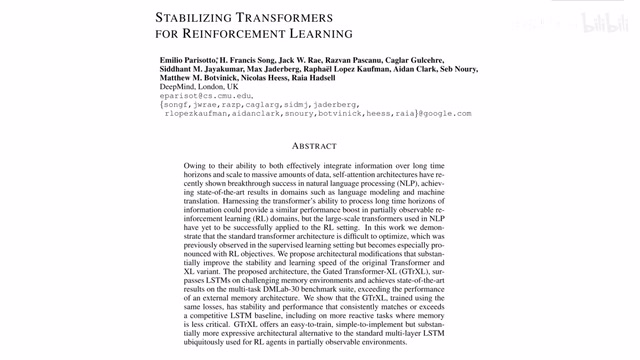
00:00:00–00:00:42 · 画面 001大家好,今天我们来介绍 Stabilizing Transformers for Reinforcement Learning那么从题目中你也可以看出来呢本文就是把 Transformer 放到了 Reinforcement Learning 的这个 Policy Network 里面也就是说我们现在的 agent 呢他内部是使用一个 Transformer 来驱动来生成 action 的那么 Transformer 出现已经很久了但是为什么过了很长一段时间之后我们才有在 Reinforcement Learning 中使用 Transformer 的相关的介绍呢
因为这个 Transformer 实在是不太好训练你如果随随便便弄几个 Transformer作为你的 agent 的 Policy Network 的话那很快这个 Loss 它就炸掉那么我们来看在本文中作者是怎样稳定这个训练的过程吧
00:00:42–00:01:15 · 画面 002
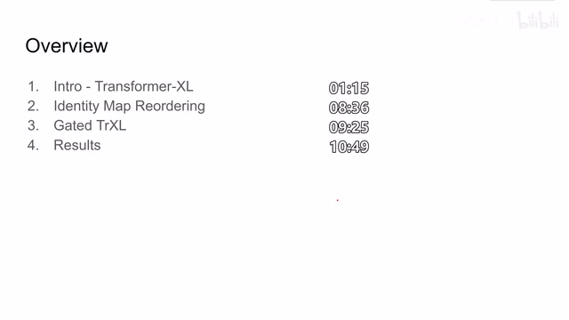
00:00:42–00:01:15 · 画面 002那么首先呢我们会介绍 Transformer Excel那么这个 idea 呢是从 ILP 里面一篇论文里面来的它把我们的 Transformer Encoder 呢改成了这个 Recurrent 的形式这个之后我们马上会介绍然后呢就是本文提出的两大贡献第一个呢是使用了 identity map reordering 其实呢就是更改 normalization 在我们 transformer 中的位置然后呢就是这个 gated Transformer-XL 也就是使用一个预支函数来替换我们直接暴力的把两个 branch 相加起来的这个方法那么最后呢是作者汇报一些实验结果好的我们首先来看到这个 Transformer-XL 其实想一下我们在 reinforcement learning 中处理的呢它是一个 state 或者说 observation 的 sequence
00:01:15–00:03:02 · 画面 003
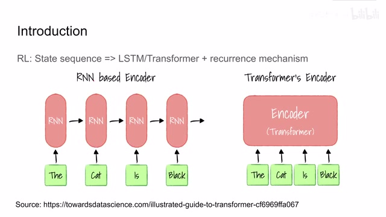
00:01:15–00:03:02 · 画面 003那么处理 sequence 呢我们最先想到的就肯定是 LSTM 嘛或者更 generalize 一点是 recurrent neural network 那么它的原理呢就是我内部维护一个 latent state 然后呢我每一个时刻的 observation 进来更新这个 latent state 然后呢这样子就不断的更新下去在这个过程中呢我们希望它的 latent state 能够记住过去发生的这些所有的序列过去发生的事情呢对它都产生影响而对一个 transformer 来说呢它处理一个序列的方式呢
跟 RNN base 还是有些不一样的对于 transformer encoder 来说我直接一整个序列每一个单词或者是 representation 或者叫 embedding 都可以它把它作为一个 token 就直接都扔到 transformer 里面了然后在 transformer 里面在内部计算他们相互的 attention 对于 transformer 来说它其实不在乎你这个序列进来是什么样的一个顺序而且一下子就吃进去了一整个序列当然有的场合我们可能不是非常在意每一个 token 它们之间的顺序,但是在这里因为我们处理的是一个时间序列,那么它们前后之间的关联呢肯定是有意义的,所以说呢我们这里需要额外的 decision encoding 来标记每一个 token 它们所在的这个位置的关系,那么除此之外呢我们的 trajectory 呢它可能是非常非常长的,如果这个序列长到一定的程度呢我们没法把它全部的塞到一个 encoder 里面,那这有存在问题了。
那么因此在下面这篇论文中作者提出说我为这个 transformer 增加一个 recurrence mechanism这样子这个 transformer encoder就可以处理一个很长的序列了那么我们先来看这个 recurrence mechanism是怎么实现的那么这个给 transformer 设计的 recurrence mechanism
00:03:02–00:03:11 · 画面 004
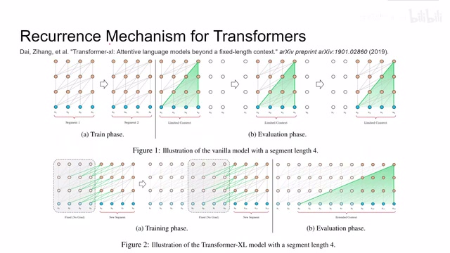
00:03:02–00:03:11 · 画面 004全部记录在了这篇论文里面这篇论文里面也就是提出了我们的 Transformer-XL这篇论文里面作者演示了
00:03:11–00:03:12 · 画面 005
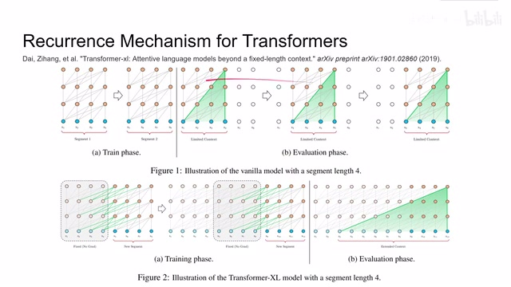
00:03:11–00:03:12 · 画面 00500:03:12–00:04:51 · 画面 006
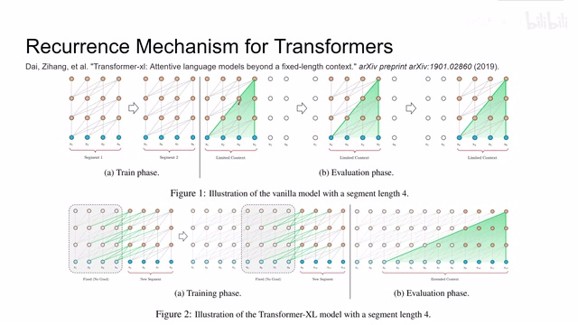
00:03:12–00:04:51 · 画面 006传统的 transformer encoder它一次能处理的数据的长度是有限的那在我做评估的时候呢我的 Transformer 如何评价一个长的序列呢只能这样子一个一个划窗划过去但是这个划窗过程中呢并没有记录之前的这些状态的信息这是一个很大的问题那为了克服这种问题呢作者提出说我把这些过去的 Token 或者 Representation 呢也保留作为输入增加到我们的 Transformer 里面但是这一部分它的梯度是停止的，也就是说我们不再根据这一部分的内容去更新它的梯度，那么这样子在训练的过程中我就可以一个 segment 一个 segment 这样子滑动过去，那么在最后测试的时候我也可以使用相应的划窗的机制，就把我们之前的这些状态都记在我们的 transformer 里面了，这样一个机制就帮我们解决了 transformer 之前不能处理很长的序列这样一个问题
但是我们之前说到 position encoding 它随着序列的增长，难道我们要一直增加每一个 token 所在的 index 吗？这显然是不太合适的一个设计，因此在这篇论文中作者提出了，我不使用一个绝对位置的 position encoding，我使用的是一个相对位置的 position encoding，比如说这里的 x3 和 x5 他们的距离就是正 2，从 x3 到 x6 他们的距离就是正 3反过来比如从 x7 到 x6 它的距离就是-1，这样子我们只需要描述每次输入 transformer encoder 里面所有的 token 它们的相对的位置就可以达到 positional encoding 它的目的，那么我们具体来看作者是怎么样实现 relative positional encoding
00:04:51–00:06:12 · 画面 007
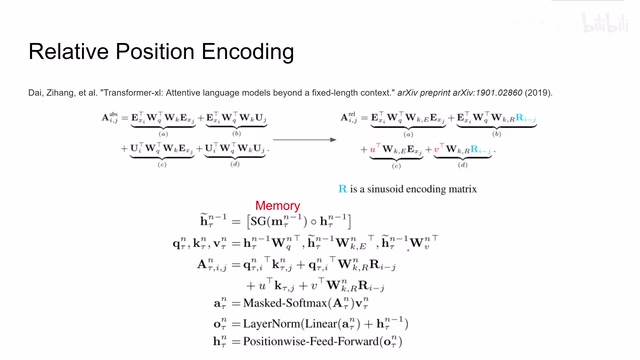
00:04:51–00:06:12 · 画面 007首先呢我们需要对这个 attention 做一个分解因为我们知道这个 positional encoding 呢跟我们原来的 token 呢是直接加在一起的加在一起之后得到新的 embedding 呢再送到我们的这个 attention mechanism 里面来做各种的计算因此呢这里呢作者先把它拆开来表示这里的 e 呢代表的是原始的比如说 word embedding 啊或者是或者是 feature 啊 representations 啊这种东西那么这个 u 呢代表的就是加在上面的 positional encoding
coding 那么对于一个之前的使用绝对位置编码的这个 transformer 来说呢它里面的那个 tension magnetism 其实就可以筛成这样子像中间呢都是 query 和 key然后呢 a 项呢是两个 representation它们之间做比较那 b 项呢是一个 positional encoding 和另一个 representation 来做比较那 c 项呢是正好反过来那 d 项呢就是两个 positional encoding它们之间相互做比较而且因为这里使用的是绝对的 positional encoding
绝对的位置而且因为这里使用的是绝对的坐标所以呢这个 i 和这个 j就是当前的这个 token在整个序列中的绝对位置那么这里呢作者说我们不妨把它换一个参数吧改成这样的形式我们看到了原来在用来计算 key 的 position到 encoding 呢
00:06:12–00:06:13 · 画面 008
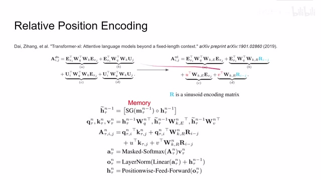
00:06:12–00:06:13 · 画面 008变成了这个 r 这个方式
00:06:13–00:07:03 · 画面 009
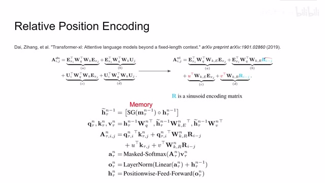
00:06:13–00:07:03 · 画面 009那么它的本质呢就是你输入一个这个数作为一个项位，然后我计算这个项位在不同频率的比如说 cos 或者是 sin 函数在这些函数中对应的值，比如说我要查 20 个频率我就会有 20 个正弦值 20 个余弦值，那么这 40 个值就是我们的 encoding vector，那么这里这个 r 的输入显然就是 i 和 j 它们两个 index 之间的坐标的差，这个编码我们用来表示在 key 这个分支上我们的 positional encoding那么回到 query 这个分支上，这里作者使用了 uv 两个 vector 直接来表示 positional encoding，它的 query 这两个 vector 是可以通过学习来得到的，那么结合之前的 recurrence mechanism，我们看到这里是作者提出的 transformer xl，首先是把之前 segmentation 它的 feature 或者是 representation 我们把它抽象成 memory，加上我们这个 segmentationrepresentation 或者叫 token 我们把它串接起来
00:07:03–00:07:05 · 画面 010
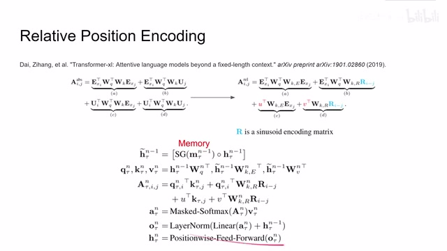
00:07:03–00:07:05 · 画面 01000:07:05–00:08:37 · 画面 011
00:07:05–00:08:37 · 画面 011是作为我们这一层的输入那么然后呢我们就根据上面的公式来加上他的 relatively positional ecoding那对于这个前面的两个 embedding 来说呢他们直接这个 query 和 key 相乘就可以了对了我们看到使用的是针对当前的这个 segmentation他所有的 token这里没有那个 telda 嘛得到这个 query然后这里呢把 memory 啊还有当前的这个 segmentation 的 token 呢一起都算上我们来计算他的 key 还有他的 value
那么在计算 intention 的环节呢首先肯定是 query 和 key对应我们的这个 d 项然后呢是 query和 positional encoding 它的 key那对应这里的这个 b 项然后呢是 positional encoding 和我们的 key那对应的就是 c 项那么最后呢是两个 positional encoding一个 query 一个 key那么对应的就是 d 项那么这样子呢我们就得到 attention给它乘上 value再送到后面的 layer normalization 啊
这个 linear layer 等等等等这样呢就是一个这个 die relative position encoding加上我们的这个 recurrence mechanism这样一个 transformer这个 transformer 呢作者呢叫他 Transformer-XL好的那么讲了这么久呢我们终于能够回到本文提出的方法了那么本文呢就是在这个 Transformer-XL 的基础上再做了一些改进使他能够稳定的作为我们 reinforcement learning 的 policy network
我们来看本文的第一个贡献
00:08:37–00:09:25 · 画面 012
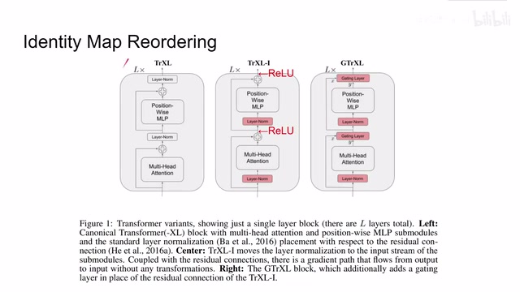
00:08:37–00:09:25 · 画面 012就是 identity map reordering那其实非常简单就是我们看这里啊最左侧的是一个 Transformer Excel就是我们之前介绍的版本那么这里我们看到作者在 Multi-Head Tension 之前加了 Layer Normalization然后在 Position-Wise MLP 之前也加了 Layer Normalization相当于把 Layer Normalization给它塞到了 Skip Connection 里面那么使用这种结构我们会发现它其实引入了一个问题
就是我们从一开始的输入有一条直接的路径就冲到最后的输出上去了那么为了避免这种问题作者在每一个 skip connection他们求和之后增加了 relu 激活函数来避免说我就直接的输入就直接通到了最里面这个是本文的第一个贡献那么第二个贡献
00:09:25–00:10:06 · 画面 013
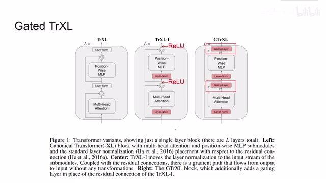
00:09:25–00:10:06 · 画面 013就是 gated transformer x我们可以看到以这个原来的 TransformerXL 加上这个 IdentityMapReordering 它的这个 SkipConnection 最后汇合的时候呢是直接使用了两个 Path 给它加起来的方法那么在本文中呢作者说我把这个事情搞复杂一点吧我把这个加号换成了这个 Gating Layers 那么 Gating Layers 呢其实就是一个 function 来控制我怎么样把这两个 Path 它们之间的内容给它结合起来那么同样的呢在这个位置呢作者也把它换成一个 Gating Layer
这个呢就是 gated Transformer-XL 就是本文提出的这个最好的这个方法那么继续再来看这个 gating layer 里面有什么呢这里呢作者试了五种 gating 方式那么最简单的像这种 sigmoid modulation 然后呢还有各种各样的连接基本上呢就是换不同的这个激活函数那么最后呢是这个 gated recurrent unit gru 你可以把它看成是一个非常简化的 lstm 它的这个表达式呢在这里
00:10:06–00:10:33 · 画面 014
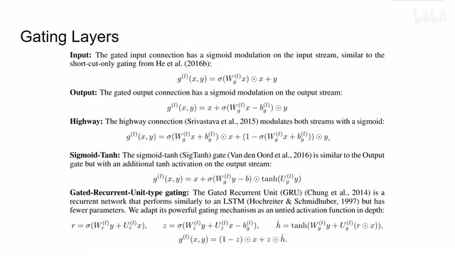
00:10:06–00:10:33 · 画面 014无论怎样，都是我们想了一个方法，把 x y 不那么直接的给它结合在一起。再额外补充一下，就是 gated identity initialization，就是说作者发现，我在一开始实验的时候，如果把 gated layer 把它初始化的像一个 identity map，而不是随机设计的参数这样子，能够加速我们的训练过程。好的，那么我们来看到结果，首先相对于 LSTM 本人提出的方法是 outbound LSTM。
00:10:33–00:10:43 · 画面 015
00:10:33–00:10:43 · 画面 01500:10:43–00:10:44 · 画面 016
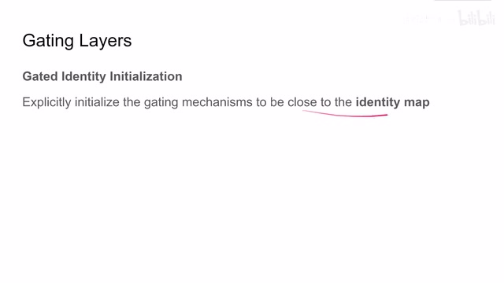
00:10:43–00:10:44 · 画面 01600:10:44–00:10:50 · 画面 017
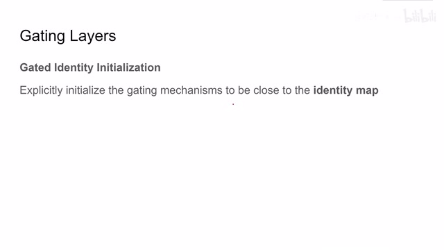
00:10:44–00:10:50 · 画面 01700:10:50–00:11:37 · 画面 018
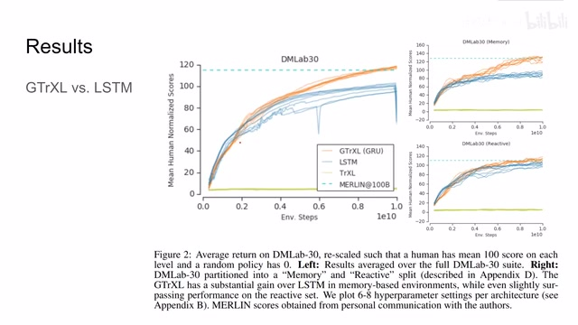
00:10:50–00:11:37 · 画面 018在 DM Lab 30 数据集上，那么 Merlin 是一个用来参考的方法，因为它的训练方法跟我们本文提出的方法都不太一样，所以说这里并没有它的 learning curve。那么继续来看 DT Transformer 到底比 LSTM 好在哪里，这里作者把 benchmark 里面他所有的任务分为两类，一类是需要我们的 agent 去记住之前的状态的。
另一类就是纯靠我们当前的状态来做出反应的。可以看到本文提出的方法在记忆力方面是比 LSTM 要好很多的。那么当然，以上这两种方法都比直接你使用 TransformerXL 拿来直接用要好的。然后我们再看在记忆领域，本文提出的方法究竟能做多好，这里是作者使用的 NumPy 的测试环境。
00:11:37–00:12:13 · 画面 019
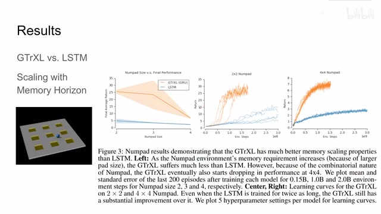
00:11:37–00:12:13 · 画面 019那么在这个环境中呢，我们需要控制这个小球去按照一定的顺序踩这上面的所有的这些方块。如果他踩对了呢，就得到一个 reward。如果他踩错了就清零重新开始。那么这个顺序呢，我们一开始是不知道的。那么对于这样一个任务来说呢，就充分发挥 GateTransformer 相对于 LSTM 它在记忆领域的优势。可以看到本文提出的方法呢，是 outperform 这个 LSTM 的。
那么此外呢，我们之前在说这个 Gating Layers 的时候呢，也介绍了有这么多 Gating Layers 的选择可以用。那么它们的表现如何呢？这里我们看到作者提供了一个对比，这个 GRU 显然是最好的。而且有意思的是，这个 Identity Map Reordering 它呢，直接把原来这个 Transformer XL 这个不太能训练的这个结果给它拉到了一个相对能看的结果。其实就是调 Layer Normalization 它的位置，这个 Trick 呢，是非常有用的。
00:12:13–00:12:21 · 画面 020
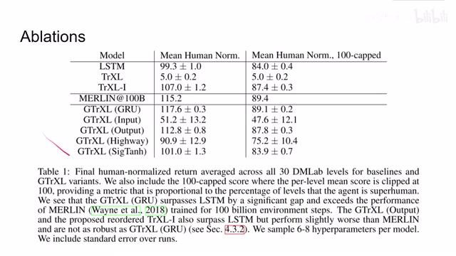
00:12:13–00:12:21 · 画面 02000:12:21–00:12:22 · 画面 021
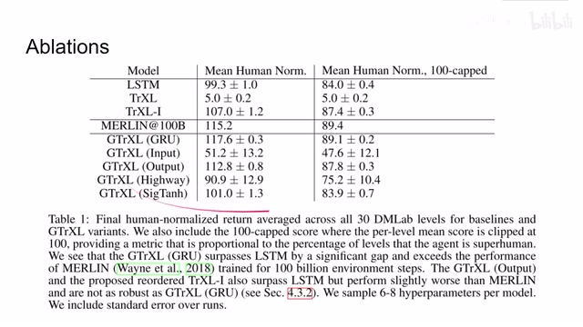
00:12:21–00:12:22 · 画面 02100:12:22–00:12:40 · 画面 022
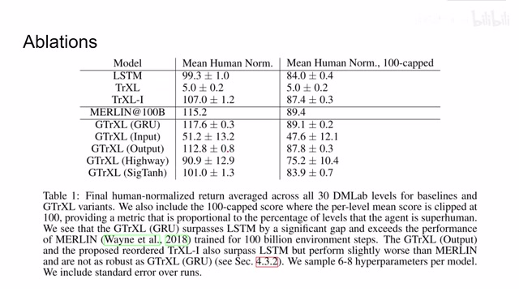
00:12:22–00:12:40 · 画面 022那么在此基础之上，作者还做了一些 sensitivity analysis，也就是本文技术的方法对于 hyperparameter 它的选择的敏感程度。比如这里作者采用 25 种不同的 hyperparameter，然后使用了不同的随机种子来做训练。可以看到学的训练次数的增加，本文技术的方法渐渐的 output 放我们这 LSTM face 这些方法，特别是 gru gating layer 相当于 output gating layer 它能够带来很大的性能提升。
00:12:40–00:13:57 · 画面 023
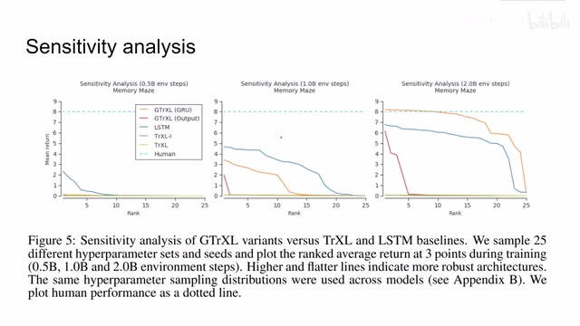
00:12:40–00:13:57 · 画面 023而且我们看到大部分的 Hyperparameter 它的选择都能够维持一个相对较高的 performance。可以说本文的方法相对于我们 Hyperparameters 的选择是不是那么敏感。那么总的来说，本文在 Transformer XL 的基础上加上 Identity Map Reordering 加上 Gating Layers 来提出了一种对 Hyperparameters 不太敏感的，能够相对稳定的训练的这么一个 agent network。
同时在记忆力这一方面，本文记录方法要 autoprogram by LSTM 也是为我们未来设计需要记忆过去的状态的这种 reinforcement learning 的唱和提供一个很好的方法。好的，那么以上就是我对这篇论文的简单的分析，还是非常推荐你去看原文汇报的各种实验它的具体的描述。那么感谢您的收看，再见。
00:13:57–00:13:57 · 画面 024
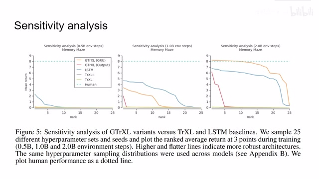
00:13:57–00:13:57 · 画面 024转写与来源说明 · 19 个自动复核提示
保留 170 个原始语音片段，19 个片段触发自动复核提示。提示仅用于定位可能的术语、重复或识别问题，不等于已确认错误。
讲解画面为源视频截图（640×360），不是可编辑 PPT 文件。全片按每秒 2 帧扫描内容变化，逐步展开页保留；连续动画保留代表画面。清晰度受源视频限制。
原视频：paper/合集_2026-10-16_机器人学/[论文简析]Stabilizing transformers for reinforcement learning[1910.06764].mp4
SHA-256：ecdde50c4038cf3c7b81507383def491b391bdd9503db6121a0a27025928f858
大家好,今天我们来介绍 Stabilizing Transformers for Reinforcement Learning
加在上面的 positional encoding
coding 那么对于一个之前的使用绝对位置编码的这个 transformer 来说呢
它里面的那个 tension magnetism 其实就可以筛成这样子
像中间呢都是 query 和 key
然后呢 a 项呢是两个 representation
它们之间做比较
那 b 项呢是一个 positional encoding 和另一个 representation 来做比较
那 c 项呢是正好反过来
那 d 项呢就是两个 positional encoding
它们之间相互做比较
而且因为这里使用的是绝对的 positional encoding
ecoding
这个 die relative position encoding
这样一个 transformer
这个 transformer 呢作者呢
叫他 Transformer-XL
作为我们 reinforcement learning 的 policy network
相当于把 Layer Normalization
全文按视频语音与画面制作。原论文可从上方链接下载；完整资料包保留全文、原始逐字稿、字幕和校对记录。